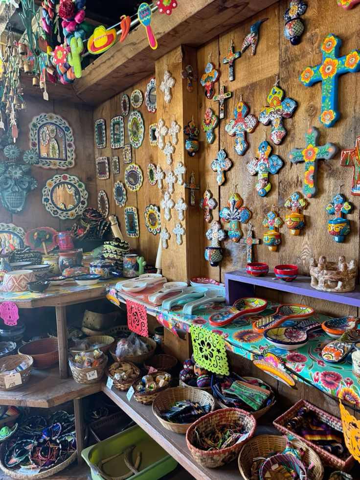
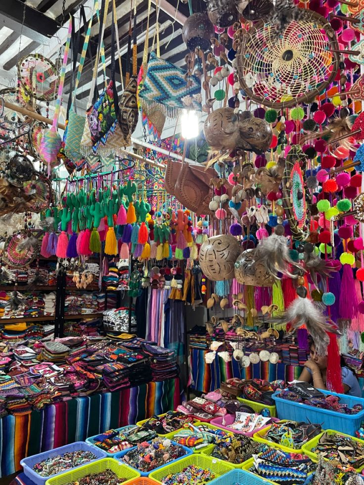

" Manos que crean, tradiciones que perduran. "

El Mercado de Artesanías de Valle de Bravo es uno de los lugares más representativos de este Pueblo Mágico, ubicado en el Estado de México. Es un espacio dedicado a mostrar y vender productos elaborados por artesanos locales y de diferentes regiones del país.
Este mercado fue construido en 1984 con el propósito de proteger, fomentar y difundir el trabajo artesanal, conservando las tradiciones y costumbres que forman parte de la identidad cultural de Valle de Bravo.
En su interior se pueden encontrar diferentes tipos de artesanías, como figuras de barro, cerámica, piezas de madera, tejidos, bordados y objetos decorativos hechos a mano.
Uno de sus mayores atractivos es la variedad de colores, formas y materiales que utilizan los artesanos para crear sus productos. Cada pieza representa creatividad, dedicación y conocimientos transmitidos de generación en generación.
El mercado permite conocer parte de las tradiciones culturales de la región y apreciar las técnicas artesanales que forman parte de la historia del Estado de México.
Además de ser un atractivo turístico, este lugar es importante para la economía local, ya que permite que los artesanos vendan sus creaciones y obtengan ingresos mediante su trabajo.
Los visitantes pueden recorrer sus diferentes puestos, observar los productos y adquirir recuerdos especiales de su visita. Es una oportunidad para encontrar regalos originales y conocer el talento de los artesanos mexicanos.
El Mercado de Artesanías se encuentra en la avenida Benito Juárez, en la zona de San Antonio, Valle de Bravo. Es un sitio que recibe tanto a turistas como a habitantes de la localidad.
Visitar este mercado es una experiencia que permite apreciar la riqueza cultural de Valle de Bravo. Apoyar a los artesanos comprando sus productos contribuye a conservar las tradiciones y valorar el trabajo hecho a mano.
El Mercado de Artesanías es un espacio donde se reúne el talento de diferentes creadores que mantienen vivas las expresiones artísticas y culturales de la región.
Al recorrer sus instalaciones, los visitantes pueden observar numerosos puestos con productos de distintos tamaños, estilos y materiales, cada uno con características especiales.
Las artesanías de madera son muy apreciadas, ya que algunas piezas presentan detalles tallados y decoraciones que demuestran la habilidad y paciencia de quienes las elaboran.
También destacan los textiles y bordados, que utilizan diferentes combinaciones de colores y diseños para representar elementos tradicionales de la cultura mexicana.
La cerámica y los objetos de barro son otros productos que llaman la atención, pues pueden utilizarse como decoración o como artículos para el hogar.
Este mercado representa una oportunidad para que los visitantes conozcan el trabajo de los artesanos y comprendan el tiempo y esfuerzo que requiere elaborar cada producto.
Durante las temporadas vacacionales y los fines de semana, el mercado puede recibir a turistas que llegan a Valle de Bravo para conocer sus atractivos y llevarse algún recuerdo de su visita.
Comprar directamente en los puestos artesanales ayuda a fortalecer el comercio local y permite que las familias dedicadas a esta actividad continúen desarrollando su trabajo.
Además de sus productos, el mercado ofrece una experiencia cultural, ya que sus colores, diseños y diferentes materiales reflejan parte de la diversidad artística que caracteriza a México.
El Mercado de Artesanías es un lugar que vale la pena conocer porque representa la creatividad, el esfuerzo y la identidad de los artesanos. Su conservación es importante para que las nuevas generaciones sigan valorando estas tradiciones.
